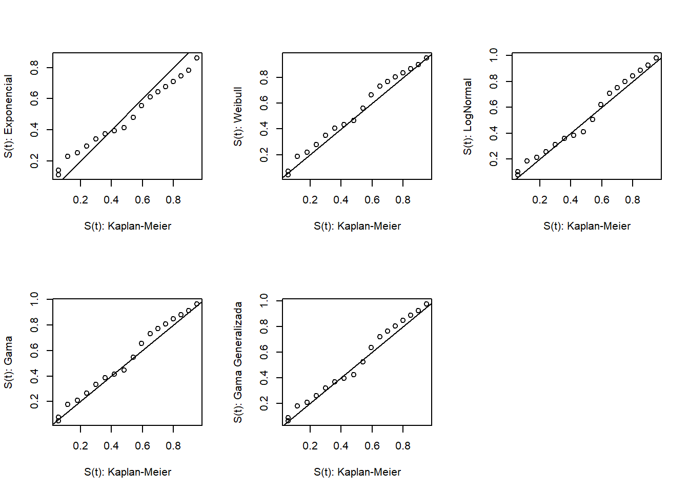
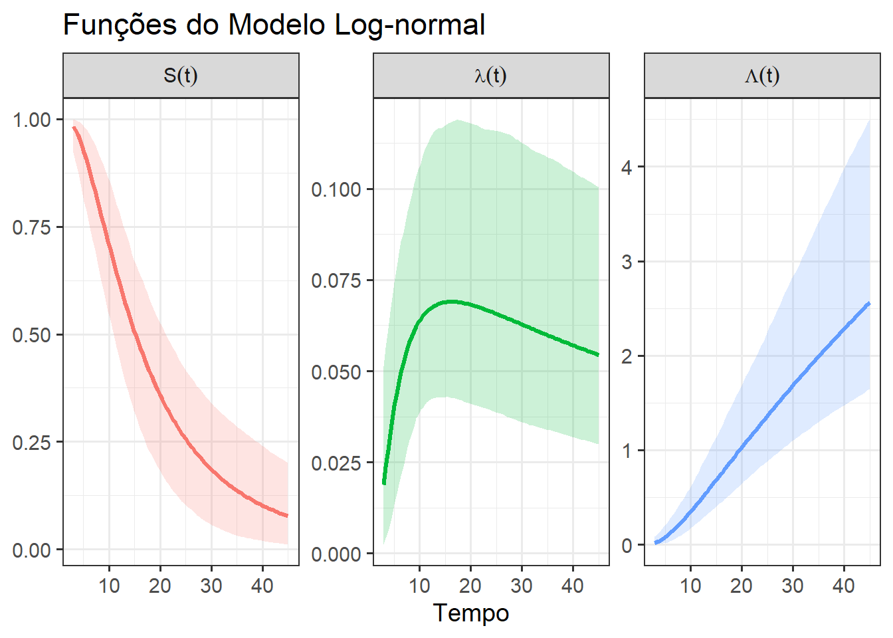

Código
require(flexsurv)
require(reslife)
library(ggplot2)Para esta terceira aula prática de Análise de Sobrevivência e Confiabilidade, precisaremos dos seguintes pacotes:
require(flexsurv)
require(reslife)
library(ggplot2)Pacote flexsurv: Responsável pelo ajuste de modelos paramétricos flexíveis aos dados de tempo até a ocorrência de um evento de interesse.
Pacote reslife: Responsável por fornecer uma estimativa para o tempo médio residual de ocorrência de um evento de interesse.
Pacote ggplot2: Responsável pela gramática dos gráficos do R.
Esta seção é dedicada à descrição das bases de dados utilizadas nesta aula.

Essa base de dados é proveniente de assessorias estatísticas realizadas no Departamento de Estatística da UFPR. Os dados contém os tempos de reincidência, em meses, de um grupo de 20 pacientes com câncer de bexiga que foram submetidos a um procedimento cirúrgico realizado por laser. Os tempos obtidos foram:
3, 5, 6, 7, 8, 9, 10, 10+, 12, 15, 15+, 18, 19, 20, 22, 25, 28, 30, 40, 45+,
em que o simbolo + indica censura.

No estudo analisado neste exemplo, são apresentados os tempos, em dias até a ocorrência dos primeiros sinais de alterações indesejadas no estado geral de saúde de 45 pacientes de ambos os sexos que receberam tratamento quimioterápico após terem sido submetidos à cirurgia de intestino. Houve um acompanhamento total de 250 dias desde a entrada do primeiro paciente até o término do estudo.
7, 8, 10, 12, 13, 14+, 19, 23, 25+, 26, 27, 31, 31+, 49, 59+, 64+, 87, 89, 107, 117, 119, 230+, 233+, 130, 148, 153, 156, 159, 191, 222, 200+, 203+, 210+, 220+, 220+, 228+, 235+, 240+ , 240+, 240+, 241+, 245+, 247+, 248+, 250+,
em que o símbolo + indica a censura.

0 fabricante de um tipo de isolante elétrico quer conhecer o comportamento de seu produto funcionando a uma temperatura de 200Cº. Um teste de vida foi realizado nestas condições uasando-se 60 isoladores elétricos. O teste terminou quando 45 deles havia falhado (censura do tipo II). As 15 unidades que não haviam falhado ao final do teste foram, desta forma, censuradas no tempo t= 2729 horas:
151, 164, 336, 365, 403, 454, 455, 473, 538, 577, 592, 628, 632, 647, 675, 727, 785, 801, 811, 816, 867, 893, 930, 937, 976, 1008, 1040, 1051, 1060, 1183, 1329, 1334, 1379, 1380, 1633, 1769, 1827, 1831, 1849, 2016, 2282, 2415, 2430, 2686, 2729, 2729+, 2729+, 2729+, 2729+, 2729+, 2729+, 2729+, 2729+, 2729+, 2729+, 2729+, 2729+, 2729+, 2729+, 2729+,
em que o símbolo + indica a censura.

O estudo é constituído de pacientes portadores de HIV atendidos entre 1986 e 2000 no Instituto de Pesquisa Clínica Evandro Chagas (Ipec/Fiocruz). Dessa coorte, obteve-se uma amostra de 193 indivíduos que foram diagnosticados como portadores de AIDS (critério CDC 1993) durante o período de acompanhamento. O objetivo é mensurar o tempo, em dias, do diagnóstico até a morte dos pacientes. Essa base de dados está armazenada no objeto DadosAIDS.csv
Nesta seção, aprenderemos como ajustar todos os modelos paramétricos vistos em sala de aula. Mas antes de fazer esses ajustes, vamos carregar a base de dados dos pacientes com câncer de bexiga:
tempos<-c(3,5,6,7,8,9,10,10,12,15,15,18,19,20,22,25,28,30,40,45)
cens<-c(1,1,1,1,1,1,1,0,1,1,0,1,1,1,1,1,1,1,1,0)
dados1<-data.frame(tempos,cens)O ajuste de todos os modelos paramétricos será feito a partir da função flexsurvreg. Essa função possui, basicamente, os seguintes argumentos:
formula: a fórmula do modelo. No caso de modelos sem covariáveis, a sua estrutura é, por exemplo, Surv(tempos, cens) ~ 1
dist: a distribuição utilizada. Pode ser uma das seguintes: gengamma.orig, weibull, gamma, exp e lnorm.
data: a base de dados.
Em todos os modelos ajustados, a função flexsurvreg estima os parâmetros do modelo pelo método da máxima verossimilhança, utilizando métodos numéricos. Além disso, a função reporta um intervalo de confiança para os parâmetros e também uma estimativa para os respectivos erros padrões. Na saída, são também reportados os seguintes:
N: tamanho da amostra.Events: número de ocorrências do evento.Censored: número de observações censuradas.Total time at risk: soma de todos os tempos observados (censurados ou não).Log-likelihood: valor da função de log-verossimilhança.AIC: Critério de Informação de AkaikePara mais informações e detalhes sobre essa função, utilize o comando ?flexsurvreg()
Em todos os modelos ajustados, a função plot faz o gráfico com as estimativas das funções básicas em análise de sobrevivência e confiabilidade. Além disso o gráfico das funções estimadas é feito em comparação com estimativas não paramétricas para diagnosticar a qualidade do ajuste.
Os argumentos da função plot são, basicamente:
x = objeto que armazena o ajuste flexsurvreg.type = tipo de gráfico a ser construido:
"survival" para a função de sobrevivência, a ser comparada com as estimativas de Kaplan-Meier obtidas via plot.survfit."cumhaz" para o risco acumulado, comparado com as estimativas de Kaplan-Meier transformadas a partir de plot.survfit."hazard" para a função de risco, a ser comparada com estimativas não paramétricas suavizadas obtidas com muhaz.As estimativas não paramétricas tendem a ser instáveis, e esses gráficos servem apenas para indicar aproximadamente o formato da função de risco ao longo do tempo. As opções
min.timeemax.timedomuhazpodem, em alguns casos, precisar ser passadas como argumentos paraplot.flexsurvregpara evitar erros.
Para mais informações e detalhes sobre essa função, utilize o comando ?plot.flexsurvreg()
Já as medidas de interesse com respeito à análise de sobrevivência e confiabilidade, como os tempos médio e mediano de ocorrência do evento de interesse e percentis, são obtidos a partir da função summary. Essa função recebe como argumento o modelo criado e os outros argumentos dessa função são:
type = "mean": fornece o tempo médio de ocorrência do evento de interesse.type = "median": fornece o tempo mediano de ocorrência do evento de interesse.type = "quantile": fornece um percentil do tempo de ocorrência do evento de interesse. Para escolher o percentil, acrescente o argumento quantiles = 0,8, por exemplo.type = "survival": fornece a função de sobrevivencia.type = "cumhaz": fornece a função de risco acumulado.type = "hazard": fornece a função de risco.type = "rmst": fornece a vida média restrita.t: tempos para serem calculados as medidas de interessecl=0.95 = nível de confiança usado nos intervalos.se=T = reporta o erro padrão atrelado à estimativa.Para mais informações e detalhes sobre essa função, utilize o comando ?summary.flexsurvreg()
O tempo médio residual de ocorrência do evento de interesse no tempo t é o tempo médio para a ocorrência do evento dado que o elemento não apresentou o evento até o instante t. No R, essa quantidade é calculada com a função reslifefsr do pacote reslife. A sintaxe é simples, basta digitar reslifefsr(ajuste1,20), que retorna o tempo médio residual de ocorrência do evento de interesse atrelado ao modelo ajuste1 no tempo t=20.
Para mais informações e detalhes sobre essa função, utilize o comando ?reslifefsr()
Relembrando, no contexto em que \(T\sim \text{Exp}(\alpha)\), a função densidade de probabilidade é: \[f(t) = \alpha e^{-\alpha t},\] onde \(\alpha > 0\) é o parâmetro de taxa. Para o ajuste do modelo exponencial, vamos utilizar a função flexsurvreg com dist="exp":
ajuste_exp<-flexsurvreg(Surv(tempos, cens) ~ 1, dist = "exp", data=dados1)
ajuste_expCall:
flexsurvreg(formula = Surv(tempos, cens) ~ 1, data = dados1,
dist = "exp")
Estimates:
est L95% U95% se
rate 0.0490 0.0305 0.0788 0.0119
N = 20, Events: 17, Censored: 3
Total time at risk: 347
Log-likelihood = -68.27389, df = 1
AIC = 138.5478Assim, \(\hat{\alpha}=0,0490\) é o estimador de máxima verossimilhança para \(\alpha\).
Os comandos a seguir fazem os gráficos das funções de sobrevivência, risco e risco acumulado para este modelo, comparando com a estimação não-paramétrica:
plot(ajuste_exp,xlab="Tempos (meses)",ylab = expression(hat(S)(t)))
plot(ajuste_exp,xlab="Tempos (meses)",ylab = expression(hat(lambda)(t)),type="hazard")
plot(ajuste_exp,xlab="Tempos (meses)",ylab = expression(hat(Lambda)(t)),type="cumhaz")
Nota-se que os gráficos ajustados não acompanham muito bem as estimativas não-paramétricas.
Os comandos a seguir calculam, na sequência, o tempo médio de ocorrência do evento de interesse, o tempo mediano de ocorrência do evento de interesse e o percentil 80 do tempo de ocorrência do evento de interesse
Mean_exp<-summary(ajuste_exp,type="mean",cl=0.95,se=T)
Median_exp<-summary(ajuste_exp,type="median",cl=0.95,se=T)
quantile80_exp<-summary(ajuste_exp,type="quantile",
quantiles=0.8,cl=0.95,se=T)
Mean_exp
est lcl ucl se
1 20.41176 12.46916 33.17376 5.272589Median_exp
est lcl ucl se
1 14.14836 8.852527 22.71908 3.603781quantile80_exp
quantile est lcl ucl se
1 0.8 32.85147 20.28782 52.43298 8.138999Já o comando a seguir fornece o tempo médio residual de ocorrência do evento de interesse no instante t=20 meses.
Resid20_exp<-reslifefsr(ajuste_exp,20)
Resid20_exp[1] 20.41176Relembrando, no contexto em que \(T \sim \text{Weibull}(\kappa, \gamma)\), a função densidade de probabilidade é:
\[
f(t) = \frac{\gamma}{\kappa} \left(\frac{t}{\kappa}\right)^{\gamma - 1} e^{-(t/\kappa)^\gamma}
\] onde \(\kappa > 0\) é o parâmetro de escala e \(\gamma > 0\) é o parâmetro de forma. Para o ajuste do modelo Weibull, vamos utilizar a função flexsurvreg com dist="weibull":
ajuste_wei<-flexsurvreg(Surv(tempos, cens) ~ 1, dist = "weibull", data=dados1)
ajuste_weiCall:
flexsurvreg(formula = Surv(tempos, cens) ~ 1, data = dados1,
dist = "weibull")
Estimates:
est L95% U95% se
shape 1.543 1.066 2.235 0.291
scale 21.339 15.591 29.206 3.417
N = 20, Events: 17, Censored: 3
Total time at risk: 347
Log-likelihood = -66.13336, df = 2
AIC = 136.2667Assim, \(\hat{\gamma}=1,543\) é o estimador de máxima verossimilhança para \(\gamma\) e \(\hat{\alpha}=21,339\) é o estimador de máxima verossimilhança para \(\alpha\).
Os comandos a seguir fazem os gráficos das funções de sobrevivência, risco e risco acumulado para este modelo, comparando com a estimação não-paramétrica:
plot(ajuste_wei,xlab="Tempos (meses)",ylab = expression(hat(S)(t)))
plot(ajuste_wei,xlab="Tempos (meses)",ylab = expression(hat(lambda)(t)),type="hazard")
plot(ajuste_wei,xlab="Tempos (meses)",ylab = expression(hat(Lambda)(t)),type="cumhaz")
Comparado ao modelo exponencial, o modelo weibull acompanha melhor as estimativas não paramétricas. Os comandos a seguir calculam, na sequência, o tempo médio de ocorrência do evento de interesse, o tempo mediano de ocorrência do evento de interesse e o percentil 80 do tempo de ocorrência do evento de interesse:
Mean_wei<-summary(ajuste_wei,type="mean",cl=0.95,se=T)
Median_wei<-summary(ajuste_wei,type="median",cl=0.95,se=T)
quantile80_wei<-summary(ajuste_wei,type="quantile",quantiles=0.8,cl=0.95,se=T)
Mean_wei
est lcl ucl se
1 19.20078 14.44329 25.80311 3.046397Median_wei
est lcl ucl se
1 16.82823 12.02144 23.41996 2.921329quantile80_wei
quantile est lcl ucl se
1 0.8 29.04556 21.52518 39.37311 4.668918Já o comando a seguir fornece o tempo médio residual de ocorrência do evento de interesse no instante t=20 meses.
Resid20_wei<-reslifefsr(ajuste_wei,20)
Resid20_wei[1] 11.57553Relembrando, no contexto em que \(T \sim \text{LogNormal}(\kappa, \gamma)\), a função densidade de probabilidade é:
\[
f(t) = \frac{1}{t \, \sigma \sqrt{2\pi}} \exp\left(-\frac{(\log t - \mu)^2}{2\sigma^2}\right)
\] Onde: \(\mu \in \mathbb{R}\) controla a posição (escala logarítmica) e \(\sigma > 0\) controla a dispersão (assimetria). Para o ajuste do modelo LogNormal, vamos utilizar a função flexsurvreg com dist="lnorm":
ajuste_lognorm<-flexsurvreg(Surv(tempos, cens) ~ 1, dist = "lnorm", data=dados1)
ajuste_lognormCall:
flexsurvreg(formula = Surv(tempos, cens) ~ 1, data = dados1,
dist = "lnorm")
Estimates:
est L95% U95% se
meanlog 2.717 2.372 3.063 0.176
sdlog 0.765 0.544 1.075 0.133
N = 20, Events: 17, Censored: 3
Total time at risk: 347
Log-likelihood = -65.7399, df = 2
AIC = 135.4798Assim, \(\hat{\mu}=2,717\) é o estimador de máxima verossimilhança para \(\mu\) e \(\hat{\sigma}=0,765\) é o estimador de máxima verossimilhança para \(\sigma\).
Os comandos a seguir fazem os gráficos das funções de sobrevivência, risco e risco acumulado para este modelo, comparando com a estimação não-paramétrica:
plot(ajuste_lognorm,xlab="Tempos (meses)",ylab = expression(hat(S)(t)))
plot(ajuste_lognorm,xlab="Tempos (meses)",ylab = expression(hat(lambda)(t)),type="hazard")
plot(ajuste_lognorm,xlab="Tempos (meses)",ylab = expression(hat(Lambda)(t)),type="cumhaz")
Comparado ao modelo exponencial, o modelo lognormal acompanha melhor as estimativas não paramétricas. Um comportamento mais diferente entre as duas estimativas é detectado na função de risco.
Os comandos a seguir calculam, na sequência, o tempo médio de ocorrência do evento de interesse, o tempo mediano de ocorrência do evento de interesse e o percentil 80 do tempo de ocorrência do evento de interesse
Mean_lognorm<-summary(ajuste_lognorm,type="mean",cl=0.95,se=T)
Median_lognorm<-summary(ajuste_lognorm,type="median",cl=0.95,se=T)
quantile80_lognorm<-summary(ajuste_lognorm,type="quantile",quantiles=0.8,cl=0.95,se=T)
Mean_lognorm
est lcl ucl se
1 20.28026 13.69346 30.67225 4.577968Median_lognorm
est lcl ucl se
1 15.13751 10.8164 21.50136 2.74657quantile80_lognorm
quantile est lcl ucl se
1 0.8 28.814 18.56758 44.11251 6.546765Já o comando a seguir fornece o tempo médio residual de ocorrência do evento de interesse no instante t=20 meses.
Resid20_lognorm<-reslifefsr(ajuste_lognorm,20)
Resid20_lognorm[1] 17.15706Relembrando, no contexto em que \(T \sim \text{Gama}(\alpha, \beta)\), a função densidade de probabilidade é:
\[
f(t) = \frac{\beta^\alpha}{\Gamma(\alpha)} t^{\alpha - 1} e^{-\beta t}
\] Onde \(\alpha > 0\) controla a forma e \(\beta > 0\) controla a taxa. Para o ajuste do modelo gama, vamos utilizar a função flexsurvreg com dist="gama":
ajuste_gama<-flexsurvreg(Surv(tempos, cens) ~ 1, dist = "gamma", data=dados1)
ajuste_gamaCall:
flexsurvreg(formula = Surv(tempos, cens) ~ 1, data = dados1,
dist = "gamma")
Estimates:
est L95% U95% se
shape 2.1439 1.1580 3.9692 0.6737
rate 0.1115 0.0540 0.2303 0.0413
N = 20, Events: 17, Censored: 3
Total time at risk: 347
Log-likelihood = -65.84754, df = 2
AIC = 135.6951Assim, \(\hat{\alpha}=2,14\) é o estimador de máxima verossimilhança para \(\alpha\) e \(\hat{\beta}=0,11\) é o estimador de máxima verossimilhança para \(\beta\).
Os comandos a seguir fazem os gráficos das funções de sobrevivência, risco e risco acumulado para este modelo, comparando com a estimação não-paramétrica:
plot(ajuste_gama,xlab="Tempos (meses)",ylab = expression(hat(S)(t)))
plot(ajuste_gama,xlab="Tempos (meses)",ylab = expression(hat(lambda)(t)),type="hazard")
plot(ajuste_gama,xlab="Tempos (meses)",ylab = expression(hat(Lambda)(t)),type="cumhaz")
Comparado ao modelo exponencial, o modelo gama acompanha melhor as estimativas não paramétricas. Os comandos a seguir calculam, na sequência, o tempo médio de ocorrência do evento de interesse, o tempo mediano de ocorrência do evento de interesse e o percentil 80 do tempo de ocorrência do evento de interesse:
Mean_gama<-summary(ajuste_gama,type="mean",cl=0.95,se=T)
Median_gama<-summary(ajuste_gama,type="median",cl=0.95,se=T)
quantile80_gama<-summary(ajuste_gama,type="quantile",
quantiles=0.8,cl=0.95,se=T)
Mean_gama
est lcl ucl se
1 19.22915 14.36665 26.38189 3.235765Median_gama
est lcl ucl se
1 16.33618 11.55606 22.6816 2.810592quantile80_gama
quantile est lcl ucl se
1 0.8 28.55305 21.0317 40.3569 5.008124Já o comando a seguir fornece o tempo médio residual de ocorrência do evento de interesse no instante t=20 meses.
Resid20_gama<-reslifefsr(ajuste_gama,20)
Resid20_gama[1] 12.22874Relembrando, no contexto em que \(T \sim \text{Gama Generalizada}(a,b,\kappa)\), a função densidade de probabilidade é:
\[
f(t \mid a,b,k) = \frac{b}{\Gamma(k)\, a^{bk}} \, t^{bk - 1} \exp\left[-\left(\frac{t}{a}\right)^b\right]
\] em que \(a > 0\) é o parâmetro de escala, \(b > 0\) é parâmetro de forma e \(k > 0\) é o parâmetro adicional de forma. Para o ajuste do modelo gama generalizado, vamos utilizar a função flexsurvreg com dist="gengamma.orig":
ajuste_gengama<-flexsurvreg(Surv(tempos, cens) ~ 1, dist = "gengamma.orig", data=dados1)
ajuste_gengamaCall:
flexsurvreg(formula = Surv(tempos, cens) ~ 1, data = dados1,
dist = "gengamma.orig")
Estimates:
est L95% U95% se
shape 4.14e-01 2.15e-03 7.99e+01 1.11e+00
scale 5.52e-02 8.03e-26 3.80e+22 1.55e+00
k 1.07e+01 4.57e-04 2.51e+05 5.50e+01
N = 20, Events: 17, Censored: 3
Total time at risk: 347
Log-likelihood = -65.69348, df = 3
AIC = 137.387Assim, \(\hat{a}=0,052\) é o estimador de máxima verossimilhança para \(a\), \(\hat{b}=0,414\) é o estimador de máxima verossimilhança para \(b\) e \(\hat{\kappa}=1,07\) é o estimador de máxima verossimilhança para \(\kappa\).
Os comandos a seguir fazem os gráficos das funções de sobrevivência, risco e risco acumulado para este modelo, comparando com a estimação não-paramétrica:
plot(ajuste_gengama,xlab="Tempos (meses)",ylab = expression(hat(S)(t)))
plot(ajuste_gengama,xlab="Tempos (meses)",ylab = expression(hat(lambda)(t)),type="hazard")
plot(ajuste_gengama,xlab="Tempos (meses)",ylab = expression(hat(Lambda)(t)),type="cumhaz")
Comparado ao modelo exponencial, o modelo gama generalizado acompanha melhor as estimativas não paramétricas. Entretanto, os intervalos de confiança ficaram imprecisos nos gráficos.
Isso se deve à parametrização adotada pela distribuição
gengamma.origna funçãoflexsurvreg. Apesar de ser uma parametrização mais simples, ela traz alguns problemas computacionais. A alternativa seria utilizar a distribuiçãogengamma. Ela apresenta uma parametrização mais complexa, porém bastante estável computacionalmente.
Os comandos a seguir calculam, na sequência, o tempo médio de ocorrência do evento de interesse, o tempo mediano de ocorrência do evento de interesse e o percentil 80 do tempo de ocorrência do evento de interesse:
# A média não é calculada
# Mean_gengama<-summary(ajuste_gengama,type="mean",cl=0.95,se=T)
Mean_gengama = NA
Median_gengama<-summary(ajuste_gengama,type="median",cl=0.95,se=T)
quantile80_gengama<-summary(ajuste_gengama,type="quantile",quantiles=0.8,cl=0.95,se=T)
Mean_gengama[1] NAMedian_gengama
est lcl ucl se
1 15.6301 0 Inf NaNquantile80_gengama
quantile est lcl ucl se
1 0.8 28.55103 26.66763 Inf NaNJá o comando a seguir fornece o tempo médio residual de ocorrência do evento de interesse no instante t=20 meses.
Resid20_gengama<-reslifefsr(ajuste_gengama,20)
Resid20_gengama[1] 14.38189Para resumir o ajuste de todos os modelos, vamos comparar, graficamente, as funções de sobrevivência, risco e risco acumulado.
plot(ajuste_exp,xlab="Tempos (meses)",ylab = expression(hat(S)(t)),lwd.ci=0, lty.ci=0, col="red")
lines(ajuste_wei,lwd.ci=0, lty.ci=0, col="blue")
lines(ajuste_lognorm,lwd.ci=0, lty.ci=0, col="green")
lines(ajuste_gama,lwd.ci=0, lty.ci=0, col="orange")
lines(ajuste_gengama,lwd.ci=0, lty.ci=0, col="purple")
legend(30,1,legend=c("Exponencial","Weibull","Log-Normal","Gama","Gama-Generalizada"),fill=c("red","blue","green","orange","purple"))
plot(ajuste_exp,xlab="Tempos (meses)",ylab = expression(hat(lambda)(t)),lwd.ci=0, lty.ci=0, col="red",type="hazard",ylim=c(0,0.2))
lines(ajuste_wei,lwd.ci=0, lty.ci=0, col="blue",type="hazard")
lines(ajuste_lognorm,lwd.ci=0, lty.ci=0, col="green",type="hazard")
lines(ajuste_gama,lwd.ci=0, lty.ci=0, col="orange",type="hazard")
lines(ajuste_gengama,lwd.ci=0, lty.ci=0, col="purple",type="hazard")
legend(0,0.2,legend=c("Exponencial","Weibull","Log-Normal","Gama","Gama-Generalizada"),fill=c("red","blue","green","orange","purple"))
plot(ajuste_exp,xlab="Tempos (meses)",ylab = expression(hat(Lambda)(t)),lwd.ci=0, lty.ci=0, col="red",type="cumhaz")
lines(ajuste_wei,lwd.ci=0, lty.ci=0, col="blue",type="cumhaz")
lines(ajuste_lognorm,lwd.ci=0, lty.ci=0, col="green",type="cumhaz")
lines(ajuste_gama,lwd.ci=0, lty.ci=0, col="orange",type="cumhaz")
lines(ajuste_gengama,lwd.ci=0, lty.ci=0, col="purple",type="cumhaz")
legend(0,4,legend=c("Exponencial","Weibull","Log-Normal","Gama","Gama-Generalizada"),fill=c("red","blue","green","orange","purple"))
É notório como o modelo exponencial se distancia dos demais em todos os gráficos. Entretanto, precisaremos de mais medidas de qualidade de ajuste para tomarmos nossa decisão no próximo capítulo.
Na sequência, os comandos a seguir trazem uma comparação de resumos numéricos atrelados à algumas quantidades de interesse:
Resumo<-cbind(c(Mean_exp[[1]][1],Mean_wei[[1]][1],Mean_lognorm[[1]][1],Mean_gama[[1]][1],Mean_gengama[[1]][1]),
c(Median_exp[[1]][1],Median_wei[[1]][1],Median_lognorm[[1]][1],Median_gama[[1]][1],Median_gengama[[1]][1]),
c(quantile80_exp[[1]][2],quantile80_wei[[1]][2],quantile80_lognorm[[1]][2],quantile80_gama[[1]][2],quantile80_gengama[[1]][2]),
c(Resid20_exp,Resid20_wei,Resid20_lognorm,Resid20_gama,Resid20_gengama))
colnames(Resumo)<-c("Média","Mediana","Percentil 80","Residual em 20")
rownames(Resumo)<-c("Exponencial","Weibull","Log-Normal","Gama","Gama Generalizada")
Resumo Média Mediana Percentil 80 Residual em 20
Exponencial 20.41176 14.14836 32.85147 20.41176
Weibull 19.20078 16.82823 29.04556 11.57553
Log-Normal 20.28026 15.13751 28.814 17.15706
Gama 19.22915 16.33618 28.55305 12.22874
Gama Generalizada NA 15.6301 28.55103 14.38189 Em sala de aula, vimos 4 métodos que, conjuntamente, contribuem para comparar e escolher o melhor modelo paramétrico:
Nas próximas linhas, cada método será discutido do ponto de vista computacional e será aplicado aos dados de câncer de bexiga de acordo com os modelos ajustados na seção anterior.
Particularmente, para ambos os métodos gráficos, precisaremos das estimativas obtidas pelo procedimento não paramétrico de Kaplan-Meier:
ekm <- survfit(Surv(tempos,cens)~1, data=dados1)
Surv_ekm <- data.frame(ekm$time,ekm$surv)
colnames(Surv_ekm) <- c("Tempo", "Surv_EKM")Para o conjunto de dados de câncer de bexiga, podemos fazer esse gráfico para os 5 modelos ajustados e comparar com a estimativa obtida pelo método Kaplan-Meier.
Para os ajustes paramétricos temos as seguintes estimativas de sobrevivencia**:
Surv_pam <- data.frame(summary(ajuste_exp)[[1]][,c(1,2)],
summary(ajuste_wei)[[1]][,2],
summary(ajuste_lognorm)[[1]][,2],
summary(ajuste_gama)[[1]][,2],
summary(ajuste_gengama)[[1]][,2])
colnames(Surv_pam) <- c("Tempo", "Surv_exp", "Surv_wei", "Surv_lognorm", "Surv_gama", "Surv_gengama")O comando a seguir junta todas as estimativas:
Surv_Final <- merge(Surv_pam,Surv_ekm,by="Tempo",all.x=T)Enfim os gráficos que comparam as funções de sobrevivência estimadas de forma paramétrica com a função de sobrevivência estimada de forma não paramétrica são feitos com os seguintes comandos:
par(mfrow=c(2,3))
plot(Surv_Final$Surv_EKM, Surv_Final$Surv_exp,
xlab= "S(t): Kaplan-Meier", ylab = "S(t): Exponencial")
lines(c(0,1), c(0,1), type="l", lty=1)
plot(Surv_Final$Surv_EKM, Surv_Final$Surv_wei,
xlab= "S(t): Kaplan-Meier", ylab = "S(t): Weibull" )
lines(c(0,1), c(0,1), type="l", lty=1)
plot(Surv_Final$Surv_EKM, Surv_Final$Surv_lognorm,
xlab= "S(t): Kaplan-Meier", ylab = "S(t): LogNormal")
lines(c(0,1), c(0,1), type="l", lty=1)
plot(Surv_Final$Surv_EKM, Surv_Final$Surv_gama,
xlab= "S(t): Kaplan-Meier", ylab = "S(t): Gama" )
lines(c(0,1), c(0,1), type="l", lty=1)
plot(Surv_Final$Surv_EKM, Surv_Final$Surv_gengama,
xlab= "S(t): Kaplan-Meier", ylab = "S(t): Gama Generalizada" )
lines(c(0,1), c(0,1), type="l", lty=1)
Nota-se que, diferentemente dos demais, o modelo exponencial possi um maior desvio com respeito a linha reta. Isso pode ser um indicativo de que esse modelo pode não representar bem os dados. Os demais modelos estão adequados e, aparentemente, o modelo LogNormal apresenta menores desvios.
Vimos na aula que este método apenas é realizado para as distribuições Exponencial, Weibull e LogNormal. As próximas linhas detalham estes gráficos para cada distribuição.
EixoY_exp = -log(Surv_ekm$Surv_EKM)
EixoX_exp = Surv_ekm$TempoEixoY_wei = log(-log(Surv_ekm$Surv_EKM))
EixoX_wei = log(Surv_ekm$Tempo)EixoY_lognorm = qnorm(Surv_ekm$Surv_EKM)
EixoX_lognorm = log(Surv_ekm$Tempo)Enfim, podemos fazer os três gráficos:
par(mfrow=c(1,3))
plot(EixoX_exp, EixoY_exp,
xlab = "t",
ylab = expression(log(S(t))),
main = "Exponencial")
plot(EixoX_wei, EixoY_wei,
xlab = expression(log(t)),
ylab = expression(log(-log(S(t)))),
main = "Weibull")
plot(EixoX_lognorm, EixoY_lognorm,
xlab = expression(log(t)),
ylab = expression(Phi^{-1}(S(t))),
main = "Log-Normal")
Os gráficos para os modelos de Weibull e log-normal apresentados na Figura 3.7 não mostram afastamentos marcantes de uma reta. Já para o modelo exponencial observa-se um certo desvio da reta. Esses gráficos confirmam os resultados observados quando do uso do método 1 e indicam os modelos de Weibull e log-normal a serem usados na análise dos dados.
No R, a extração do AIC e do BIC de cada modelo é feita de forma simples, pelos seguintes comandos:
AIC<-c(ajuste_exp$AIC,
ajuste_wei$AIC,
ajuste_lognorm$AIC,
ajuste_gama$AIC,
ajuste_gengama$AIC)
BIC<-c(ajuste_exp$BIC,
ajuste_wei$BIC,
ajuste_lognorm$BIC,
ajuste_gama$BIC,
ajuste_gengama$BIC)
Modelos<-c("Modelo Exponencial", "Modelo Weibull",
"Modelo Log-Normal",
"Modelo Gama", "Modelo Gama Generalizado")
Comparacao<-data.frame(Modelos,AIC,BIC)
Comparacao Modelos AIC BIC
1 Modelo Exponencial 138.5478 139.5435
2 Modelo Weibull 136.2667 138.2582
3 Modelo Log-Normal 135.4798 137.4713
4 Modelo Gama 135.6951 137.6865
5 Modelo Gama Generalizado 137.3870 140.3742Assim, segundo ambos os critérios, o modelo Log-Normal é o que mais se ajusta bem aos dados.
Conforme visto em sala, o modelo gama generalizado estende os modelos exponencial, weibull, gama e lognormal. Assim, vamos avaliar cada par de forma separada. Em todos os casos, as hipóteses testadas são:
\(H_0\): O modelo mais simples é adequado \(H_0\): O modelo mais complexo é adequado
Para o caso em que está sendo testado a adequação do modelo exponencial, a diferença entre a quantidade de parâmetros do modelo mais simples e o modelo mais complexo é \(p-q\) - \(3-1\) = 2.
Para todos os demais modelos, a diferença entre a quantidade de parâmetros do modelo mais simples e o modelo mais complexo é \(p-q\) - \(3-2\) = 1.
Seguem os comandos para o cálculo de todos estes testes:
TRV_exp = 2*(ajuste_gengama$loglik-ajuste_exp$loglik)
P_valor_exp = pchisq(TRV_exp,2,lower.tail=F)
TRV_wei = 2*(ajuste_gengama$loglik-ajuste_wei$loglik)
P_valor_wei = pchisq(TRV_wei,1,lower.tail=F)
TRV_lognorm = 2*(ajuste_gengama$loglik-ajuste_lognorm$loglik)
P_valor_lognorm = pchisq(TRV_lognorm,1,lower.tail=F)
TRV_gama = 2*(ajuste_gengama$loglik-ajuste_gama$loglik)
P_valor_gama = pchisq(TRV_gama,1,lower.tail=F)Os Valores-p obtidos foram:
| Modelo | Valor-p | Decisão (\(\alpha = 0.05\)) |
|---|---|---|
| Exponencial | 0.076 | Não rejeita \(H_0\) (marginal) |
| Weibull | 0.348 | Não rejeita \(H_0\) |
| Log-normal | 0.761 | Não rejeita \(H_0\) |
| Gama | 0.579 | Não rejeita \(H_0\) |
Interpretação:
Todos os modelos são compatíveis com o Gama Generalizado (nenhum rejeitou \(H_0\) ao nível de 5%)
O Log-normal apresenta o maior valor-p (0.761), indicando ser o modelo mais compatível com o Gama Generalizado
A Exponencial tem o menor valor-p (0.076), estando no limiar da rejeição — cautela ao escolhê-lo
Weibull e Gama apresentam valores-p intermediários, sendo também opções viáveis
Assim, segundo uma análise conjunta de todos os critérios, o modelo Log-Normal é o que mais se ajusta bem aos dados. Com a escolha deste modelo, podemos retormar as suas estimativas do tempo médio de ocorrência do evento de interesse, o tempo mediano de ocorrência do evento de interesse, o percentil 80 do tempo de ocorrência do evento de interesse e tempo médio residual de ocorrência do evento de interesse no instante t=20 meses.
t <- seq(min(dados1$tempos), max(dados1$tempos), length.out = 100)
S <- summary(ajuste_lognorm, t = t, type = "survival")[[1]]
h <- summary(ajuste_lognorm, t = t, type = "hazard")[[1]]
H <- summary(ajuste_lognorm, t = t, type = "cumhaz")[[1]]
df <- rbind(
data.frame(t = t, valor = S$est, li = S$lcl, ls = S$ucl, funcao = "S(t)"),
data.frame(t = t, valor = h$est, li = h$lcl, ls = h$ucl, funcao = "h(t)"),
data.frame(t = t, valor = H$est, li = H$lcl, ls = H$ucl, funcao = "H(t)")
)
df$funcao <- factor(
df$funcao,
levels = c("S(t)", "h(t)", "H(t)"),
labels = c("S(t)", "lambda(t)", "Lambda(t)")
)
ggplot(df, aes(t, valor, color = funcao, fill = funcao)) +
geom_ribbon(aes(ymin = li, ymax = ls), alpha = 0.2, color = NA) +
geom_line(size = 1.1) +
facet_wrap(~funcao, scales = "free_y", labeller = label_parsed) +
labs(x = "Tempo", y = NULL,
title = "Funções do Modelo Log-normal") +
theme_bw(base_size = 14) +
theme(legend.position = "none")
Mean_lognorm<-summary(ajuste_lognorm,type="mean",cl=0.95,se=T)
Mean_lognorm
est lcl ucl se
1 20.28026 13.81852 31.60098 4.551772Median_lognorm<-summary(ajuste_lognorm,type="median",cl=0.95,se=T)
Median_lognorm
est lcl ucl se
1 15.13751 10.3214 21.22677 2.691418quantile80_lognorm<-summary(ajuste_lognorm,type="quantile",
quantiles=0.8,cl=0.95,se=T)
quantile80_lognorm
quantile est lcl ucl se
1 0.8 28.814 19.66768 44.38338 6.487169Resid20_lognorm<-reslifefsr(ajuste_lognorm,20)
Resid20_lognorm[1] 17.15706O modelo log-normal indicou que o tempo até a recidiva não segue um padrão de risco constante, apresentando variação ao longo do tempo.
Observa-se um aumento inicial do risco, seguido de um pico em tempos intermediários e posterior declínio, sugerindo a existência de um período crítico após a cirurgia.
A função de sobrevivência mostrou que a probabilidade de permanecer livre de recidiva diminui mais rapidamente nos primeiros períodos, estabilizando-se ao longo do tempo.
A mediana do tempo até recidiva (≈ 15) indica que metade dos pacientes apresenta o evento até esse tempo.
O percentil 80 (≈ 29) sugere que a maioria dos pacientes experimenta recidiva até esse ponto.
A diferença entre média e mediana evidencia assimetria e cauda longa, indicando heterogeneidade entre os pacientes.
O tempo médio residual aos 20 (≈ 17) mostra que indivíduos que permanecem livres do evento até esse tempo tendem a sobreviver mais tempo sem recidiva.
O aumento dos intervalos de confiança ao longo do tempo reflete a redução de informação na cauda, comportamento esperado em análise de sobrevivência.
Em conjunto, os resultados indicam a necessidade de maior monitoramento nos períodos iniciais após a cirurgia, onde o risco é mais elevado.
1- Para a base de dados do tratamento quimioterápico, ajuste todos os 6 modelos vistos hoje.
tempos<-c(7, 8, 10, 12, 13, 14, 19, 23, 25, 26, 27,
31, 31, 49, 59, 64, 87, 89, 107, 117, 119,
230, 233, 130, 148, 153, 156, 159, 191, 222,
200, 203, 210, 220, 220, 228, 235, 240, 240,
240, 241, 245, 247, 248, 250)
cens<-c(1,1,1,1,1,0,1,1,0,1,1,1,0,1,0,0,1,1,1,1,1,0,
0,1,1,1,1,1,1,1,0,0,0,0,0,0,0,0,0,0,0,0,0,0,0)
dados2<-data.frame(tempos,cens)2- Para a base de dados de isolante elétrico, ajuste todos os 6 modelos vistos hoje.
tempos<-c(151, 164, 336, 365, 403, 454, 455, 473, 538,
577, 592, 628, 632, 647, 675, 727, 785, 801,
811, 816, 867, 893, 930, 937, 976, 1008, 1040,
1051, 1060, 1183, 1329, 1334, 1379, 1380, 1633,
1769, 1827, 1831, 1849, 2016, 2282, 2415, 2430,
2686, 2729, rep(2729,15))
cens<-c(rep(1,45),rep(0,15))
dados3<-data.frame(tempos,cens)3- Para os dados de AIDS: